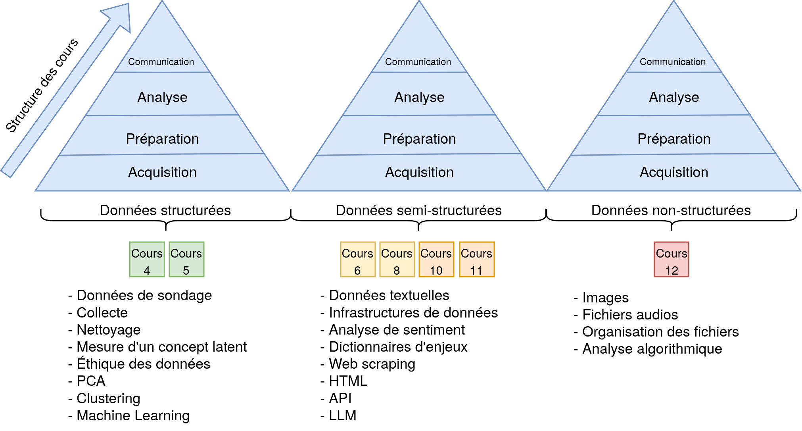
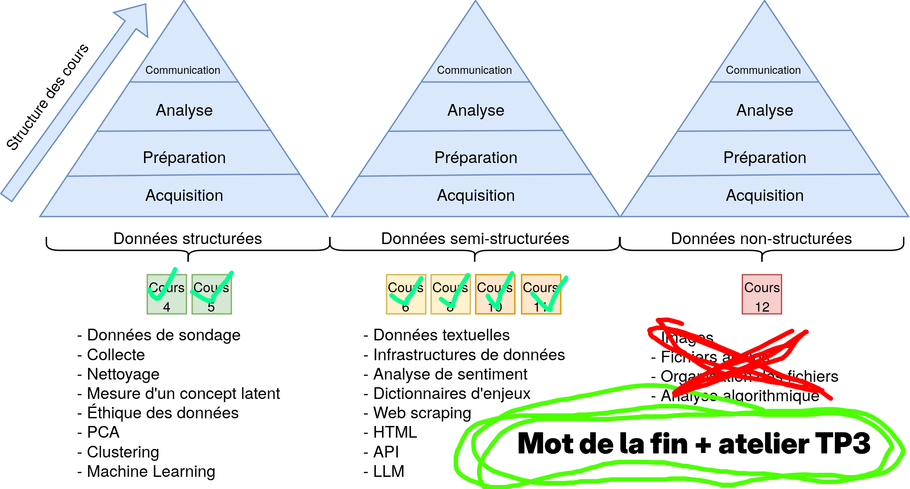
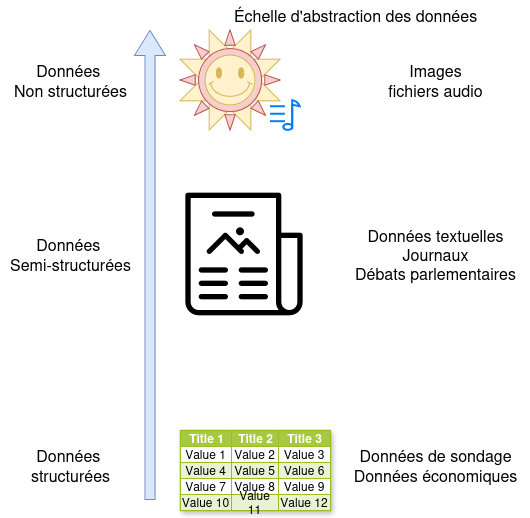
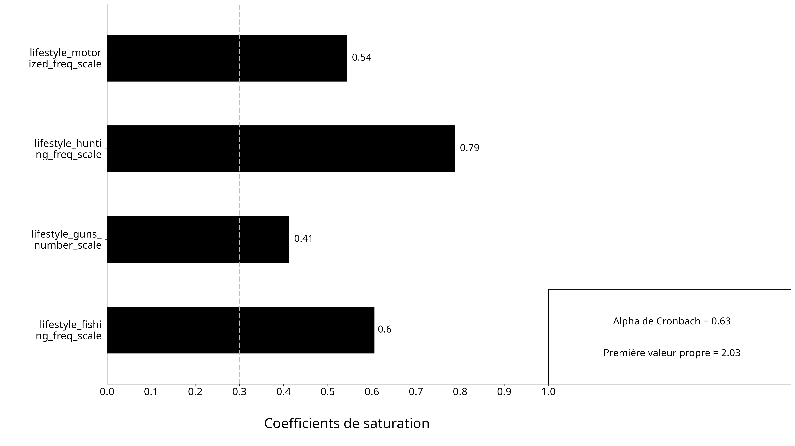
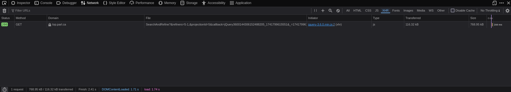
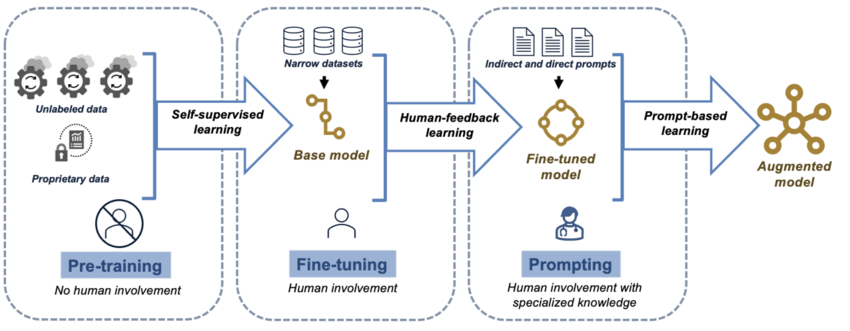

Résumé de la session
Introduction aux mégadonnées en sciences sociales
Laurence-Olivier M. Foisy
Université de Montréal
Résumé de la session
Structure du cours


Le parcours du semestre
- Introduction aux mégadonnées : voir des traces numériques comme données de recherche
- Introduction à R : objets, fonctions, graphiques et statistiques de base
- Terminal, Git, GitHub et Quarto : travailler proprement et de façon reproductible
- Tidy data et sondages : structurer, nettoyer, représenter et pondérer
- Mesures latentes : construire de bons indicateurs pour des concepts abstraits
- Analyse textuelle : pipeline, regex, dictionnaires et classification
- Web scraping : naviguer, aspirer, extraire et nettoyer des données web
- LLM : comprendre, utiliser et automatiser des tâches avec des API
- IA agentique : faire agir un LLM avec des outils et des sources connectées
Le fil conducteur du cours

Notre travail cette session a été de transformer des données produites pour d’autres fins en matériel de recherche exploitable.
- observer les données disponibles
- les structurer
- les nettoyer
- les analyser
- interpréter les résultats
Fondations
La boîte à outils
Produire et analyser
R- Positron
- packages du tidyverse
- visualisation et modèles simples
Travailler proprement
- terminal
- Git
- GitHub
- Quarto

Tidy data et cleaning
- Une variable par colonne
- Une observation par ligne
- Une unité d’analyse par tableau
- Standardiser le nettoyage rend l’analyse plus simple
Données structurées
Sondages
- demander plutôt qu’observer
- formuler les questions avec soin
- penser à l’échantillonnage et à la non-réponse
- vérifier la représentativité
- pondérer lorsque l’échantillon s’écarte de la population
Mesures latentes
- plusieurs concepts importants ne sont pas directement observables
- il faut construire une échelle à partir de plusieurs indicateurs
- une bonne mesure doit être fiable et valide
- l’analyse factorielle aide à voir si les items tiennent ensemble

Données non structurées
Analyse textuelle
- stopwords
- regex
- dictionnaires
- analyse de sentiment
- classification et résumé

Web scraping
- comprendre la différence entre web et internet
- lire une URL
- distinguer HTML, JSON et APIs
- observer le code source et l’onglet réseau
- extraire, nettoyer puis organiser les données

IA et automatisation
Ce que sont les LLM
- des modèles entraînés sur d’énormes volumes de texte
- utiles pour générer, transformer, classifier et résumer
Mais
- biais des données
- opacité partielle du raisonnement

Utiliser les LLM en recherche
- Accéder aux modèles par API
- Écrire un prompt clair
- Faire travailler le modèle ligne par ligne sur un tableau
- Automatiser avec des boucles
- Sauvegarder progressivement les résultats
- Vérifier les réponses critiques
IA agentique
Un LLM seul produit du texte.
Un agent combine:
- un objectif
- de l’autonomie
- des outils
- des actions observables

MCP
- connecter des outils et des services au modèle
- aller chercher de l’information dans GitHub, Notion, Drive ou le terminal
- passer de la simple conversation à l’exécution de tâches
- ouvrir la porte à des workflows de recherche plus intégrés

Conclusion
Compétences acquises
Compétences techniques
- programmer en R
- nettoyer et restructurer des données
- faire des graphiques et des analyses de base
- utiliser GitHub et Quarto
- collecter des données via web scraping ou API
Compétences analytiques
- traduire une question en stratégie empirique
- évaluer la qualité d’une mesure
- choisir une méthode adaptée au données disponible
- utiliser l’IA comme outil
L’idée à retenir
Les outils vus cette session servent à une même chose:
- transformer des traces numériques en données
- transformer des données en analyse
- transformer une analyse en argument de recherche défendable